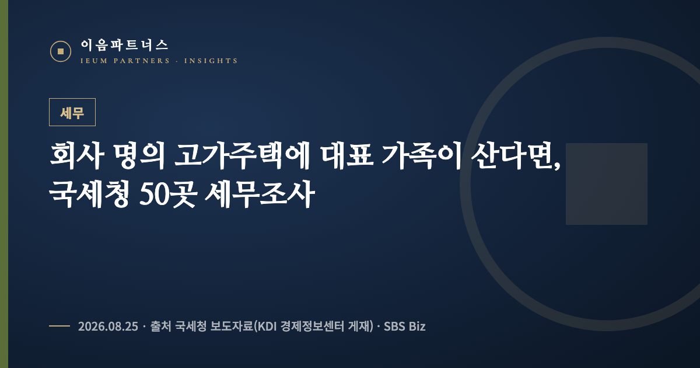

회사 명의 고가주택에 대표 가족이 산다면, 국세청 50곳 세무조사

회사 명의로 집을 사 두고 대표 가족이 사는 경우가 적지 않습니다. 국세청은 이런 법인 고가주택을 전부 점검한 뒤 2026년 8월 25일 50개 업체에 대한 세무조사에 들어갔습니다. 이 글에서는 국세청이 무엇을 확인했는지, 어떤 사례가 문제가 됐는지, 그리고 회사 명의 주택이 있는 대표님이 무엇을 점검하면 좋은지 정리합니다.
이번 50곳은 1차 조사이고, 국세청은 “추가 탈루혐의가 중대한 법인에 대해서도 순차적으로 세무조사를 확대 실시할 계획”이라고 밝혔습니다(국세청 보도자료). 회사 명의 주택이나 콘도가 있다면 지금 쓰임새를 정리해 두는 것이 좋습니다. 우리 회사 상황이 궁금하시다면 카카오톡 채널 이음파트너스로 편하게 물어보셔도 됩니다.
국세청은 무엇을 확인했나
국세청이 법인 고가주택 2,639채를 점검한 결과, 임대법인의 임대용 1,157채와 직원 기숙사 등 업무용 385채를 뺀 1,097채에서 사주 일가가 살거나 사적으로 쓴 사실이 확인됐습니다(SBS Biz). 전체의 약 42%에 해당하는 규모입니다.
| 구분 | 내용 |
|---|---|
| 점검한 법인 고가주택 | 2,639채 |
| 사주 일가 거주·사적 사용 | 1,097채(약 42%) |
| 조사 대상 | 50개 업체: 사주일가 거주형 28곳, 부동산 투기형 5곳, 별장형 17곳 |
| 전체 탈루 혐의 금액 | 약 1조 9천억 원 |
어떤 사례가 문제가 됐나
① 회사 돈으로 산 집에 대표 가족이 거주
한 법인은 서울 한남동의 200억 원대 고급주택을 회사 돈으로 사들이고 100억 원대 증축·인테리어까지 회사 비용으로 한 뒤 사주 일가가 사용했습니다. 인건비 형식으로 약 200억 원을 더 빼낸 혐의도 받습니다. 다른 법인은 청담동 40억 원대 빌라를 전입신고 없이 사주 전용 사택으로 쓰고, 사주 배우자에게 허위 인건비를 주는 등 약 30억 원을 유출했습니다.
② 규제 회피와 '직원 복지'로 꾸민 별장
사주 일가가 강남 아파트 2채는 개인 명의로 가진 채 법인 명의 고가 아파트에 살며 종합부동산세 중과 등 다주택 규제를 피한 사례도 있었습니다. 평창 골프장 안 고급 콘도를 약 30억 원에 사서 사내 공문과 사용일지를 꾸며 직원 복리후생용인 것처럼 해 부가가치세 매입세액 공제(살 때 낸 부가세를 돌려받는 것)를 받은 법인, 수영장 딸린 단독주택을 직원 기숙사라고 한 법인도 있었습니다.
우리 회사에는 어떤 영향이 있을까
국세청이 밝힌 주요 탈루 유형은 회사 돈으로 고가주택·별장 취득, 사주 일가에 거주 제공, 허위 인건비 같은 가공 비용, 다주택·대출 규제 회피, 부당한 부가가치세 매입세액 공제, 특수관계법인 이익 분여 등입니다. 회사 자금으로 사적 이익을 본 사주에게는 그 이익에 과세하고, 조세범칙 행위는 조세범 처벌법에 따라 처벌하겠다고 했습니다.
규모가 작은 회사라도 원리는 같습니다. 회사 명의 주택을 대표 가족이 무상으로 쓰거나 업무와 관계없는 관리비·인테리어를 회사 비용으로 처리했다면, 비용으로 인정받지 못하고 대표 개인의 소득으로 보아 세금이 붙을 수 있습니다.
대표님이 지금 확인할 것
- 회사 명의 주택·오피스텔·콘도를 지금 누가, 어떤 목적으로 쓰는지
- 직원 사택이나 기숙사라면 실제 거주 직원과 사용 기록이 남아 있는지
- 대표나 가족이 쓴다면 시세에 맞는 임대료를 받고, 관련 비용을 회사 비용으로 처리하지 않았는지
- 가족에게 지급하는 급여가 실제 근무에 따른 것인지
참고한 자료
- 법인 보유 고가주택 등 사적사용 제1차 50개 업체 세무조사 실시 — 국세청 보도자료(KDI 경제정보센터 게재) (2026.08.25)
- 한남동 200억 집도 회삿돈으로…황제사택 정조준 누굴까? — SBS Biz (2026.08.25)
회사 명의 부동산의 쓰임새를 정리하는 방법이 궁금하시다면 카카오톡 채널 이음파트너스에서 함께 살펴보실 수 있습니다.
※ 이 글은 일반적인 정보 제공을 위한 것으로, 개별 사안은 세무사·노무사 등 전문가와 함께 확인하시기 바랍니다.